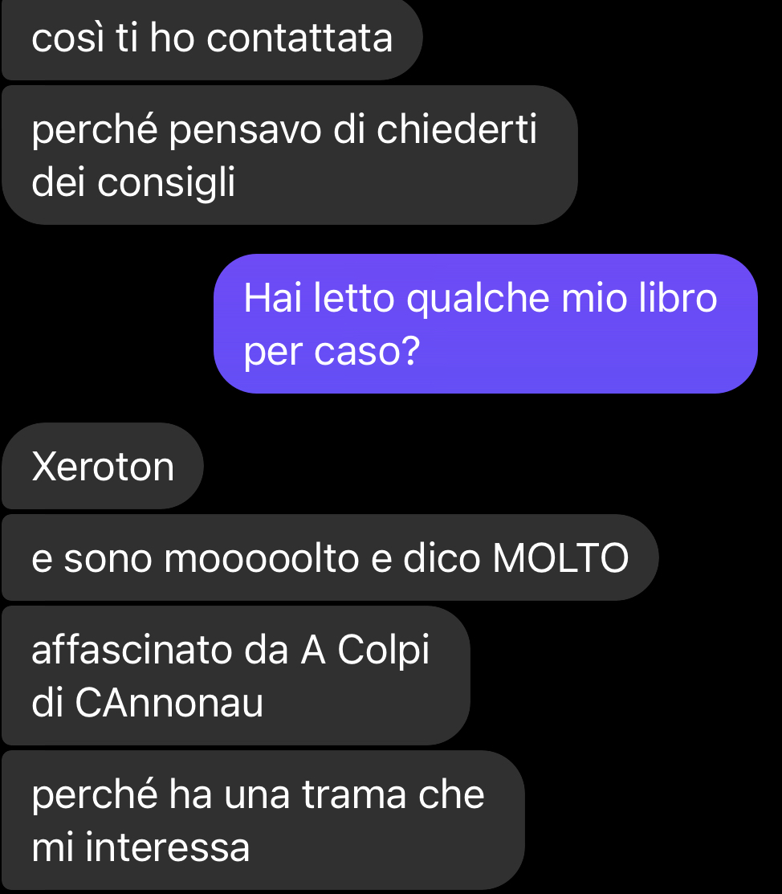

Miscellanea
Domande da non fare a uno scrittore
10 novembre 2021
Chi mi conosce sa che non mi faccio molti problemi a raccontare anche di che colore mi sono tinta i peli delle ascelle la settimana scorsa, ma ci sono certe domande che semplicemente non andrebbero fatte a uno scrittore. Domande che magari sono indice di poco tatto, o che ci mettono a disagio, che ci fanno addirittura soffrire.
Che sia in fiera, in un’intervista, via chat, che sia a una festa tra amici e parenti… è bene ricordarsi che si sta sempre parlando con una persona, e che la figura pubblica di un’autrice o di un autore non dà diritto a chiunque di ignorare le accortezze della comunicazione di tutti i giorni. Perché come ogni persona, anche noi scrittrici e scrittori abbiamo dubbi, problemi, e angosce.
Se sei uno sconosciuto, ricordati che l’autrice (o l’autore) non è a tua disposizione solo perché ha messo in piazza i suoi libri.
Siccome io sono la prima a non avere una buona comprensione dei limiti sociali e dell’etichetta, ne approfitto per fare una lista di quello che so essere poco gradito.
 Ciao! Sei una scrittrice anche tu? Una volta ho scritto un libro/racconto/memoria autobiografica/poesia! Ti va di leggerlo?
Ciao! Sei una scrittrice anche tu? Una volta ho scritto un libro/racconto/memoria autobiografica/poesia! Ti va di leggerlo?
Questo vale soprattutto per gli aspiranti scrittori nei confronti di uno scrittore già pubblicato.
Non è per cattiveria. Giuro. Ma la risposta finirà per essere no.
Dal momento in cui uno scrittore viene pubblicato da una casa editrice, avrà probabilmente poco tempo da dedicare alla vanità di un esordiente. Sarà concentrato sui nuovi romanzi, sulle nuove uscite, sul marketing e sulla necessità di networking.
Io sono sempre alla ricerca di beta reader capaci di comportarsi in modo professionale, di scambiare critiche e pareri sulle nostre opere, ma non ho proprio il tempo (né le competenze editoriali, perché non sono un’agente o un’editor) da dedicare ad aspiranti scrittori che, come me al tempo, stanno iniziando un percorso da zero.
Richieste assurde di questo tipo mi arrivano quotidianamente da perfetti sconosciuti ed eclatanti casi umani che spesso non hanno familiarità con il mio lavoro!

A che punto sei con il prossimo libro?
Molte persone non hanno problemi a parlarne, io stessa posto aggiornamenti regolari sullo stato di tutti i miei WIP, e non mi faccio spaventare da deadline o da montagne di lavoro. (Ok, lo ammetto: mi faccio spaventare, ma le domande che ricevo non influenzano questa paura).
Ma non tutti siamo uguali, e conosco vari autori che in certe fasi della scrittura soffrono e faticano a raggiungere l'obiettivo che si sono prefissi per tutta una serie di ragioni personali. Questo tipo di domanda non fa altro che aumentare i loro livelli di ansia (probabilmente già alle stelle), e peggiorare la qualità del loro lavoro.
Meglio seguirli sui social e lasciare che siano loro a parlarne quando si sentiranno pronti.
Una domanda più “sicura” in questo frangente è “a cosa stai lavorando in questo momento?” o “quale sarà il tuo prossimo progetto?”
Puoi darmi un bacio insieme alla dedica? (E vari livelli di becero marpionaggio che non conquisterebbero nemmeno un pinguino nella stagione degli amori nel Polo Nord)
Succede spessissimo da parte di perfetti sconosciuti che non hanno la benché minima confidenza per potersi comportare così.
Non c'è molto da spiegare, anche perché se stai leggendo questo articolo non puoi essere uno di questi elementi, e beh, sarai senza parole esattamente quanto me.
Puoi raccomandarmi al tuo editore?
Tra un autore e il suo editore (o agente) si crea un legame professionale basato sulla fiducia e sul rispetto. Chiedere una raccomandazione a un autore (oltre che poco carino visto che probabilmente l’autore si è fatto una lunga gavetta per arrivare dov’è), può creare situazioni imbarazzanti e rovinare quella dinamica di professionalità.
Nessun autore vorrebbe mai raccomandare una persona che non conosce bene o di cui non ha mai letto varie opere in modo approfondito. La competenza di un aspirante scrittore non risiede solo nella sua abilità stilistica: la capacità di ricevere critiche, di lavorare umilmente con un editor, di promuoversi e sapersi vendere, sono tutte doti importanti per un editore.
E io non vorrei mai che il mio editore – che mi rispetta – pensasse che io non sia capace di giudizio quando si tratta di altri scrittori.
Ma anche se siamo amici, e ci leggiamo a vicenda, chiedermi una raccomandazione diretta è imbarazzante. Potrebbe essere ok se tu mi chiedessi di nominarmi quando fai la tua proposta editoriale, tipo: “sono il beta reader di Titania Blesh e lei mi ha aiutato nella revisione di questo manoscritto”. Ma chiedimelo, prima. Per educazione.
Come stanno andando le vendite?
Fare questa domanda è un po’ come chiedere a qualcuno quale sia il suo stipendio.
Premetto che sono tra quelle persone che ritengono che parlare apertamente del proprio stipendio possa solo beneficiare i dipendenti, e non ho mai avuto problemi con questo tipo di domande: ne parlo con i miei familiari e con i miei amici… ma c’è chi preferisce di no. Semplicemente, è qualcosa che “non si chiede”.
Allo stesso modo, chiedere le condizioni del contratto editoriale, chiedere se hai ricevuto un anticipo o se stai guadagnando bene con le royalties… beh, è sempre lo stesso discorso.
Ricordiamoci che spesso un autore guadagna così poco di royalties che per avere uno stipendio decente dovrebbe vendere migliaia di libri al mese (e tutti sappiamo che è già un buon risultato se un autore italiano raggiunge le mille copie totali nella sua carriera). Quindi chiedere quali sono i guadagni… beh, rischi solo di deprimere questo poveraccio.
Quando esce il seguito del tuo libro X?
Per quanto possa sembrare una domanda innocente, può fare molto male a uno scrittore.
La scrittura è un business, e se il tuo libro non vende, è normale che il venditore decida di rimuovere il prodotto dal mercato. Chiedendo allo scrittore che, come esordio, ha un autoconclusivo con possibilità di sequel, stai infiammando tutta una serie di nodi dolorosi, risvegliando dubbi e insicurezze. In poche parole, con questa domanda stai anche chiedendo:
- Come stanno andando le vendite del tuo primo libro?
- Il tuo editore è contento di te come autore?
- È pronto a investire altri soldi in te?
- La gente ti legge?
Immaginatevi come può reagire uno scrittore che viene messo di fronte a queste domande, se già la vita in editoria è un inferno anche quando vendi un sacco di copie.
Vi assicuro che se l’autore ha firmato un altro contratto o sta per pubblicare un sequel… sarà il primo a raccontarvelo!
Scriviamo un libro a quattro mani?
Gente che non ha studiato una pagina di narratologia ma ti adora come autore e ti chiede di scrivere a quattro mani.
Oltre alle richieste che a primo impatto sembrano più insensate dell’acqua dietetica, ci troviamo davanti a una dinamica in cui l’autore più esperto traina il meno esperto.
A meno che i due autori abbiano un rapporto molto stretto, entrambi consapevoli della competenza e professionalità altrui… meglio stare attenti a come ponete questa domanda. O evitare del tutto.
Ho un’idea geniale da un milione di dollari. Me la scriveresti?
(Tutto questo senza nemmeno offrirti un centesimo per il ghost writing!)
Mi trattengo dall’esprimere il mio parere diretto, ma la mia risposta su quanto le idee sono meno utili della carta igienica a un velo è in questo articolo.
E per ultimi, i miei personali favoriti:
Da dove ti è venuta l’idea di questo libro?
Questa purtroppo è una delle domande che ricevo più spesso durante interviste o presentazioni e… ahh, la odio!
Mi mette proprio in imbarazzo! La nascita di un’idea è un momento così riduttivo nella vita di uno scrittore da essere totalmente trascurabile. Probabilmente ero sul cesso che leggevo il retro del flacone del sapone intimo. Oppure sotto la doccia cercando di districarmi i nodi nei capelli. L’idea è un lampo privo di significato, e raccontarne la storia mi sembra sminuire tutto il VERO lavoro che c’è dietro a un libro.
Quindi cercare di spiegare qualcosa di ridicolo, totalmente privo di significato, a chi si aspetta una risposta stupefacente è… beh, imbarazzante. Per me almeno.
Ma la protagonista del tuo libro sei tu in realtà?
Questa domanda mi fa particolarmente imbestialire, oltre a essere insensibile e invasiva.
Chiunque abbia mai scritto un romanzo con serietà sa che non si può semplificare il lavoro di caratterizzazione del personaggio associandolo alla vera identità dell’autore.
È naturale che ognuno dei miei personaggi abbia qualcosa di “mio”. Cioè, è tutto scritto tramite la mia percezione della realtà, quindi è ovvio che alcuni elementi siano parte delle mie conoscenze.
Ma un personaggio viene creato attraverso una serie di filtri, costruzioni e architetture atte a integrarlo alla perfezione in una trama. Non per soddisfare i bisogni dell’autore di vivere in un altro mondo.
In conclusione, vedrete anche voi che molte di queste domande non sono affatto inaccettabili o maleducate. Noi scrittori siamo abituati a ricevere critiche dai nostri beta lettori, recensioni distruttive dai nostri hater, rifiuti e porte sbattute in faccia. Quindi anche la domanda più scomoda è sempre tollerabile.
Ma per evitare situazioni scomode, come sempre, affidatevi al buonsenso!